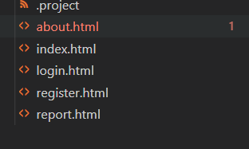
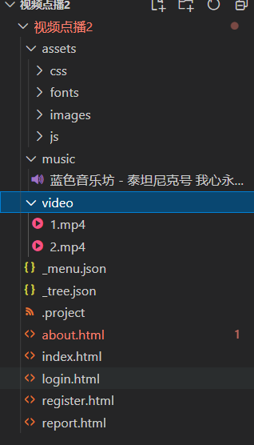
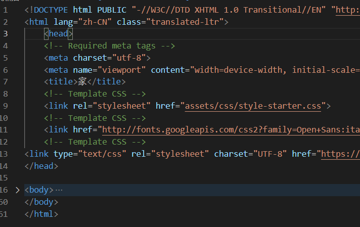
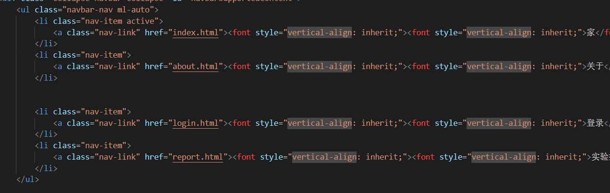
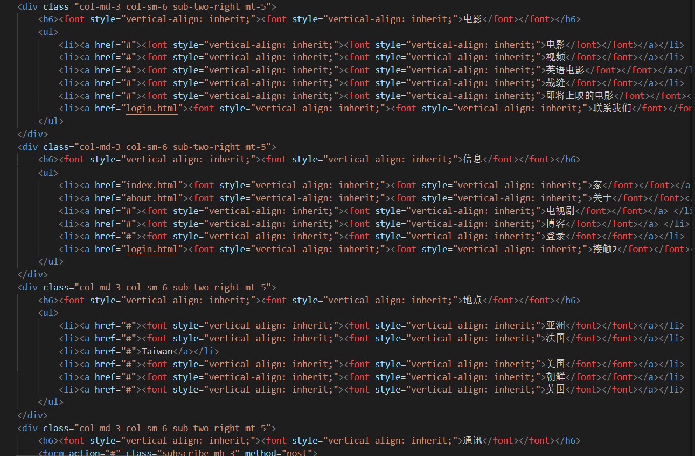

《Web应用基础》课程结业报告
1. 实验内容
1.1 实验目的
制作一个含有多个界面的网页，并进一步掌握网页设计技术。
1.2 实验内容
该网页为一个视频播放器，可以进行用户登录、影片推荐、音频播放等操作，同时也可以调节页面为夜间模式和正常模式，从而可以对整个网页的颜色进行控制。：
2. 网页界面的设置
2.1 页面的设计
该网页大体包括以下五个界面：

并且是由以下5个html文件构成的：

2.2环境的搭建和准备
建立所需的文件夹和文件，目录如下图所示：

其中，HTML文件中`index.html`是主页文件，其它则是对应副页的文件,images中存储有网页中需要用到的图片；music中包含了网页中所需的音频，video文件夹中则包含了网页中的视频文件，js文件夹则是相应js文件，。
2.2 页面布局
index主页面
基本框架如下：

顶部导航栏：

底部导航栏：

3. 遇到的麻烦及解决过程
（1）起初是无法清晰的对整个界面进行一个合理的规划，导致迟迟无法动工，但是后来在截至时间的压迫下，就开始展开网站的搭建工作了。首先先整理了自己对这个网站如何建设的想法，然后对一个一个页面进行逐步的规划，确定了展示方式，在这些准备工作以及想法的的呈现方式确定后，接下来的工作就比较顺利了，遇到一些困难时，也可以很轻松的上网查资料以及问同学，实际上，我把这个困难总结为拖延症，对付拖延症的一个最简单的方法是从现在开始，做出一个合理的规划。
（2）该网站的初衷是做一个比较个性化的视频推荐及播放软件，对用户进行合理的兴趣推荐，但由于我无法找到调用各视频网站的API指令，所以无法在用户选择或搜索后跳转到相应的视频界面，故我只能自己下载了几个视频用以展示网页功能。
4. 总结
此项目耗时还是比较久的,开始学习html，基本上需要将HTML的标签记熟，这样写界面的时候才能轻松简单的完成，然后就是进行css的学习，这个css大概一看不是那么的难，但其实其中包括了很多的东西，需要一点一点的摸索，才能逐渐合理的运用。实际上web并不是非常难的一门课程，但是万事开头难呐，想要入门以及写出一个比较美观漂亮的网页还是需要花费比较多的功夫的。开始学习的时候总像个无头苍蝇一样到处乱窜，不知道如何构建项目，如何让图片呈现，甚至不知道怎样去查阅资料，对于我而言确实是一种诺大的折磨。但好在在作业完不成的压力的逼迫下，我开始认真了解这门课程，渐渐的变得顺风顺水，虽然有些东西还是很难以理解，但是经过一段时间的学习我已经可以静下心来慢慢理解，慢慢进步了，从而也找到了web的乐趣。